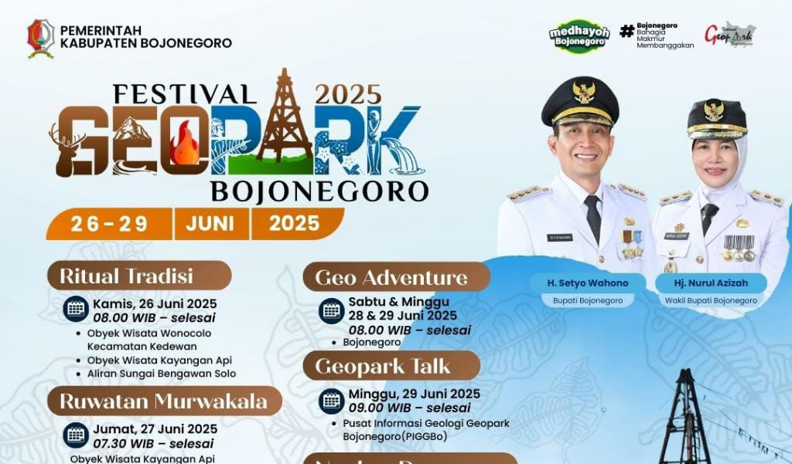

 alt="Festival Seni">
Festival Seni Bojonegoro 2025
Perayaan seni & budaya yang menampilkan kolosal tari, gamelan, dan pameran lokal.
Jelajahi kekayaan alam Bojonegoro — dari fenomena Kayangan Api, waduk bersejarah Pacal, hingga pesona Bengawan Solo. Website ini menyajikan informasi, sejarah, dan berita terkait potensi alam daerah.
Bojonegoro adalah sebuah kabupaten di Provinsi Jawa Timur yang memiliki sejarah panjang sejak masa kerajaan kuno di Jawa. Pada zaman dahulu, wilayah ini berada dalam kekuasaan beberapa kerajaan besar seperti Medang, Kahuripan, Janggala, hingga Majapahit, yang dibuktikan dengan ditemukannya berbagai peninggalan arkeologis di beberapa desa tua. Nama “Bojonegoro” sendiri memiliki beberapa versi asal-usul. Versi pertama menyebutkan bahwa nama tersebut berasal dari kata Boja/Boj o yang berarti hutan atau pedalaman, dan Negara yang berarti wilayah pemerintahan, sehingga Bojonegoro berarti “wilayah pedalaman kerajaan”. Versi lain menyebut istilah Bajra Negara, yang berarti “wilayah yang kuat atau kokoh”. Nama Bojonagoro juga muncul dalam catatan kolonial Belanda pada abad ke-18 sebelum akhirnya berubah menjadi “Bojonegoro” seperti sekarang. Pada masa Mataram Islam, Bojonegoro termasuk wilayah Mancanegara dan menjadi tempat pemukiman bangsawan serta prajurit Mataram. Memasuki masa kolonial Belanda, terutama pada pemerintahan Daendels, wilayah ini ditetapkan sebagai kabupaten dengan Raden Tumenggung Jayanegara sebagai bupati pertama. Sejak saat itu Bojonegoro berkembang sebagai pusat pemerintahan, perdagangan, pertanian, serta wilayah yang memiliki potensi alam melimpah. Kini Bojonegoro dikenal sebagai daerah penghasil migas terbesar di Jawa melalui Blok Cepu, sekaligus sentra pertanian dan kawasan wisata alam yang terus berkembang.
Fenomena alam seperti gas bumi yang muncul di Kayangan Api, dan sumber air di waduk/wilayah sungai memberi manfaat ekologis dan budaya bagi komunitas setempat.
Bojonegoro adalah kabupaten di Jawa Timur dengan potensi alam dan budaya yang kaya — pertanian, hutan jati, serta sumber daya energi. Pemerintah daerah mendorong pengembangan wisata berbasis alam dan budaya.
Pejabat kepala daerah yang memimpin pembangunan dan layanan publik di Kabupaten Bojonegoro.
Mendampingi Bupati dalam koordinasi kebijakan dan penyelenggaraan pemerintahan daerah.
Perayaan seni & budaya yang menampilkan kolosal tari, gamelan, dan pameran lokal.
Kegiatan bersama sekolah untuk memahami fenomena geologi dan konservasi lingkungan.